Technical Analysis Mastery
Decode market movements and trade with confidence.
-
Introduction to Technical Analysis
What is technical analysis & why it matters
Technical analysis is a trading discipline used to evaluate investments and identify trading opportunities
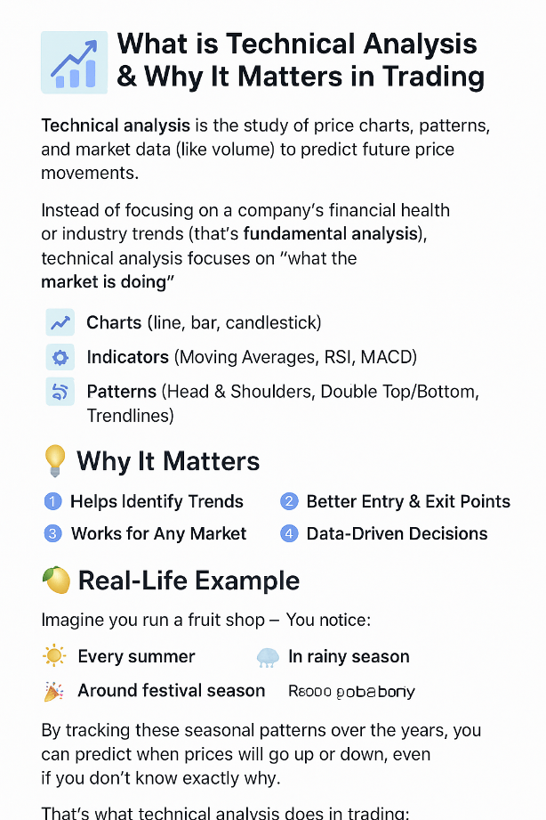
Technical analysis is the study of 📈 price charts, 🔍 patterns, and 📊 market data (like volume) to predict future price movements. Instead of focusing on a company's financial health or industry trends (that's fundamental analysis 🏦), technical analysis focuses on "what the market is doing" right now.
- 📉 Charts (line, bar, candlestick)
- ⚙️ Indicators (Moving Averages, RSI, MACD)
- 🌀 Patterns (Head & Shoulders, Double Top/Bottom, Trendlines)
💡 Why It Matters
- 🚀 Helps Identify Trends – Spot whether the market is going up, down, or sideways.
- 🎯 Better Entry & Exit Points – Know when to buy and when to sell.
- 🌍 Works for Any Market – Stocks, forex, crypto, commodities.
- 🧠 Data-Driven Decisions – Reduce emotional trading by relying on signals.
🍋 Real-Life Example
Imagine you run a fruit shop 🛒. You notice:
- ☀️ Every summer, the price of mangoes rises.
- 🌧️ In rainy season, prices drop.
- 🎉 Around festival season, prices peak sharply.
By tracking these seasonal patterns over the years 📅, you can predict when prices will go up or down — even if you don’t know exactly why.
That’s what technical analysis does in trading: it looks at past price behavior to make better predictions for the future 📆.
-
Difference between technical and fundamental analysis
While both technical and fundamental analysis are used to evaluate financial instruments and make trading decisions, they take different approaches. Think of it like a doctor assessing a patient: fundamental analysis is like looking at a patient's medical history,
lab results, and overall health to determine their long-term prognosis. Technical analysis is like monitoring their heart rate, blood pressure, and other real-time vital signs to make immediate decisions about their condition.
Fundamental Analysis 📊
Fundamental analysis is the process of evaluating a company's intrinsic value by examining its financial statements 📝, management 👨💼, industry 🏭, and the overall economic environment 🌍. The goal is to determine if a stock is currently overvalued or undervalued.
- 🤔 Focus: The "why" behind a company's price.
- 📈 Data Used: Financial reports 📄 (balance sheets, income statements), earnings per share (EPS), price-to-earnings (P/E) ratio, industry trends 📊, and economic indicators like GDP and interest rates.
- 🕰️ Time Horizon: Typically long-term. Investors who use fundamental analysis are often looking for stocks to hold for months or even years, betting that the market will eventually recognize the company's true value.
- 💰 Example: An investor reads a company's annual report and sees that its revenue and profit margins have been consistently growing. They also note that the company has a strong brand 💪 and is a market leader. This leads them to believe the stock is currently undervalued and has great long-term potential. They buy and hold the stock, expecting the price to rise over time.
Technical Analysis 📉📈
Technical analysis, on the other hand, is the practice of evaluating securities by analyzing statistical trends from past trading activity, such as price movement and volume. It operates on the principle that all relevant information is already reflected in the price.
- 👀 Focus: The "what" behind a company's price.
- 📐 Data Used: Price charts 📊, trading volume 🔊, and indicators like moving averages, the Relative Strength Index (RSI), and MACD (Moving Average Convergence Divergence).
- ⏱️ Time Horizon: Typically short-term. Traders use technical analysis to identify patterns and trends to time their entry and exit points for quick profits. 💸
- 📉 Example: A trader observes a stock's chart and notices a "head and shoulders" pattern, a common chart formation that signals a potential reversal of an uptrend. Based on this pattern, they decide to sell their shares to avoid a potential price drop, even if the company's underlying fundamentals are strong.
Key Differences Summarized
Feature Fundamental Analysis Technical Analysis Primary Goal 💎 Determine a company's intrinsic value. 🔮 Forecast future price movements. Focus 🏢 The business behind the stock. 🛒 The market action of the stock. Time Frame 🗓️ Long-term (months to years). ⏳ Short-term (minutes to months). Key Tools 🧠 Financial statements, economic data, industry analysis. 📐 Price charts, volume, and technical indicators. Core Belief ⚖️ A stock's price will eventually reflect its true value. 🏷️ All relevant information is already in the price. -
Understanding market psychology and price action
In the world of trading, numbers and charts tell only part of the story. The rest is told by human emotions. Market psychology and price action are two intertwined concepts that help traders understand the "why" and "what" behind market movements.
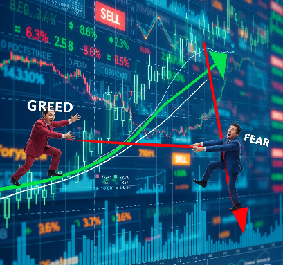
Market Psychology: The "Why" Behind the Moves 🤔
Market psychology refers to the overall sentiment and collective behavior of market participants. It's driven by powerful human emotions like greed 🤑, fear 😱, excitement 🤩, and anxiety 😬. These emotions, often in a herd mentality, can cause markets to move in ways that might seem irrational based on a company's fundamentals.
- Greed and Euphoria: When a market is rising, greed kicks in. Traders see others making money and are afraid of missing out (FOMO - Fear of Missing Out) 🏃💨. This drives them to buy, pushing prices even higher and creating a bullish market. This can lead to a bubble where prices become detached from the underlying value. 🎈
- Fear and Panic: When the market turns and prices start to fall, fear takes over. Traders, fearing losses, start to sell 📉. This panic selling can accelerate the decline, creating a downward spiral and a bearish market, where assets are often sold for far less than their true value. 🥶
Price Action: The "What" on the Chart 📊
Price action is the raw movement of a security's price over time. It's the most basic form of technical analysis, where traders make decisions based on the patterns, trends, and levels they see on a chart, without relying on other indicators. Price action is the visual manifestation of market psychology. 👀
- Candlestick Patterns: Specific shapes on a chart (like a "pin bar" or "engulfing pattern") that tell a story about the battle between buyers and sellers. ⚔️
- Support and Resistance Levels: "Floors" ⬇️ and "ceilings" ⬆️ where a price has historically struggled to fall below or rise above.
- Trend Lines: Lines drawn to connect a series of highs or lows, indicating the direction of the market. 📈📉
The Interplay: A Real-Life Example 🎬
Let's imagine a fictional tech company, "Innovate Solutions."
- Greed and the Uptrend: Innovate Solutions announces a groundbreaking new product. The initial news is positive, and early investors start buying. Other traders, driven by excitement and FOMO, jump in. This collective greed creates a strong uptrend on the price chart. The price action shows a series of higher highs and higher lows, with long green candlesticks, indicating strong buying pressure. The market psychology is one of euphoria. 🚀
- The Overstretched Peak: The stock's price surges, but the company's fundamentals haven't caught up. Smart money and seasoned traders begin to notice the price is becoming unsustainable. The price action shows a "head and shoulders" pattern forming, with the price making a high, a higher high, and then a lower high. This is a subtle signal that the buying momentum is weakening. 🧘♂️
- Fear and the Reversal: Suddenly, a news report reveals that the new product has a major bug. The collective mood of the market shifts from euphoria to fear. Traders who bought in late now panic and start selling to cut their losses. This mass selling, fueled by fear, causes the stock to plummet. The price action confirms the reversal, breaking below a key support level that had been holding for weeks. The long red candlesticks and high volume on the sell-off are the visual representation of the panic in the market. 💥
In this example, market psychology (greed, FOMO, fear, panic) was the engine driving the price. Price action (the uptrend, the head and shoulders pattern, the breakdown of support) was the vehicle that allowed traders to visualize and interpret those emotions, helping them to make decisions about when to buy and when to sell. 🎯
-
Chart Types & Timeframes
Line, bar, and candlestick charts
Line charts are the simplest way to visualize a security's price history. They connect a series of data points over a given time frame
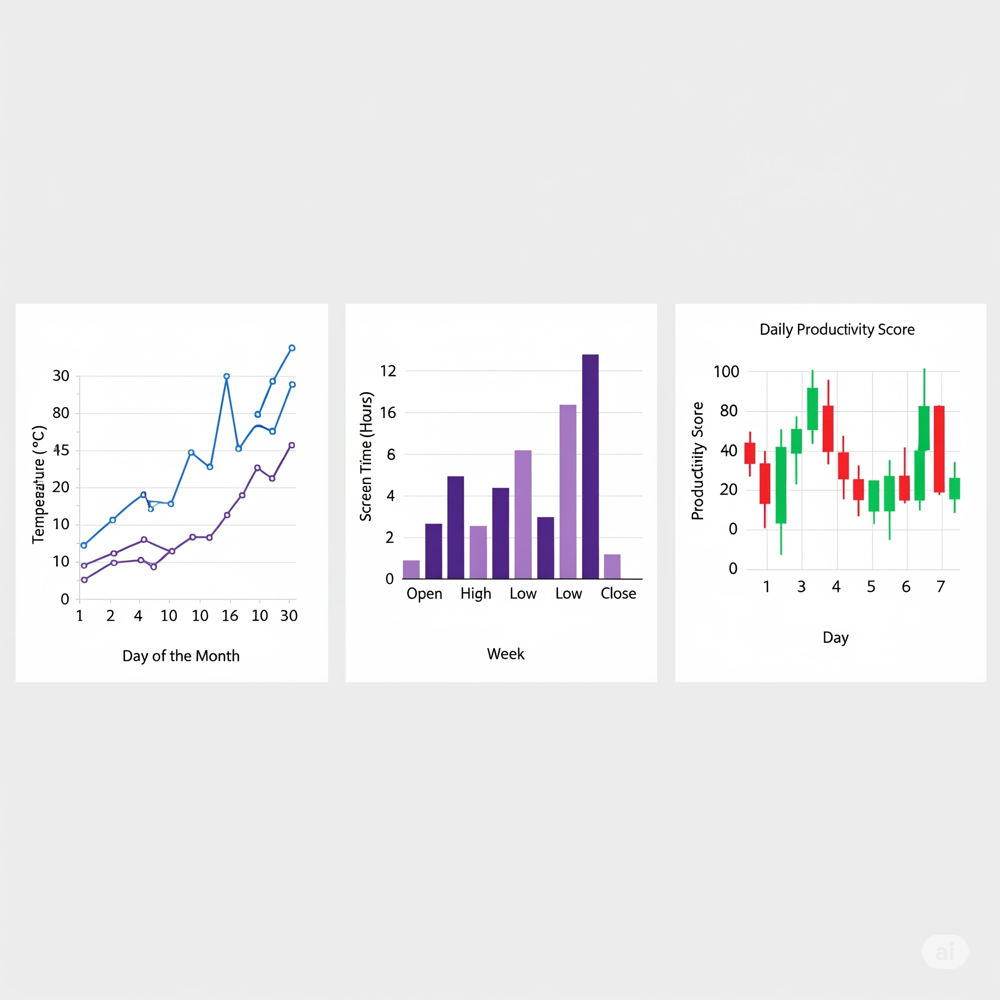
Line Charts 📈
A line chart is great for showing trends over time.
- Daily Life Example: Imagine you're tracking the temperature in your city every day for a month 🗓️. A line chart would connect the daily high temperature data points. This makes it easy to visualize if the weather is getting warmer or cooler overall, without getting bogged down by hourly fluctuations.
Bar Charts 📊
A bar chart gives you more detail than a line chart, showing the "open," "high," "low," and "close" data for each period.
- Daily Life Example: Let's say you're monitoring your weekly screen time on your phone 📱. A bar chart could represent each day. The top of the bar would be the maximum hours you spent on your phone in a single session (the high), and the bottom would be the minimum (the low). Small ticks on the left and right could represent your screen time when you first woke up (the open) and your last use before bed (the close).
Candlestick Charts 🕯️
Candlestick charts are a visually intuitive way to show the same data as bar charts, but with color to represent a positive or negative change.
- Daily Life Example: You could use a candlestick chart to track your daily productivity at work 🧑💼. A green 🟢 candle would represent a day where you completed more tasks than the previous day (a "bullish" day). A red 🔴 candle would mean you completed fewer tasks (a "bearish" day). The body of the candle would show the difference, and the wicks would represent your peak and lowest productivity levels during the day.
-
Intraday, swing, and positional trading timeframes
Intraday trading involves buying and selling financial instruments within the same trading day.
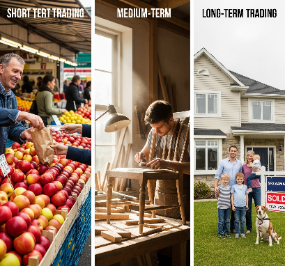
Intraday Trading 🏃💨
Intraday trading involves buying and selling financial instruments within the same trading day ⏱️. The goal is to profit from small price fluctuations 🤏, and no positions are held overnight 🌃. This style is characterized by its very short timeframes, typically lasting from a few minutes ☕ to a few hours ⏳. Intraday traders often use one-minute, five-minute, or fifteen-minute charts to analyze price action 📈📉.
- Daily Life Example: A fruit vendor buys a box of apples at 9:00 a.m. for ₹500. They sell individual apples throughout the day, and by 5:00 p.m., they've sold the entire box for a total of ₹650. The vendor has made an intraday profit of ₹150, all within the same day, without holding any inventory overnight.
Swing Trading 🏄♂️
Swing trading is a style that aims to capture short- to medium-term gains in a trend. Unlike intraday trading, swing traders hold their positions for more than one day, typically for a few days 🗓️ to a few weeks 📅. They focus on identifying potential "swings" or reversals 🔄 in price action, using tools like daily and weekly charts to make their decisions 🤔.
- Daily Life Example: A person buys an antique chair at a yard sale for ₹2,000. They believe its value will increase slightly in the short term. They hold the chair for two weeks, do some minor repairs, and then sell it at a local flea market for ₹3,000. They've capitalized on a short-term trend in the vintage furniture market, holding the item for a few days to weeks.
Positional Trading 🧘♀️
Positional trading is a long-term strategy where traders hold a position for an extended period, which can be weeks 🗓️, months ⏳, or even years 🗓️🗓️. This style ignores minor market fluctuations 🌊 and focuses on the bigger picture 🔭, using long-term trends and fundamental analysis 🧐 to make decisions. Positional traders use weekly, monthly, and even yearly charts 🗺️.
- Daily Life Example: An individual buys a house for ₹50 lakh. They believe the property's value will increase significantly over the next decade due to local development projects. They rent out the house and hold onto it for 10 years, ignoring short-term fluctuations in the housing market. After 10 years, they sell the house for ₹1 crore, profiting from the long-term trend of rising property values in the area.
Summary of Differences
Feature Intraday Trading Swing Trading Positional Trading Timeframe Minutes to hours ⏱️ Days to weeks 🗓️ Weeks, months, years 🗓️🗓️ Goal Profit from small price moves 🤏 Capture short- to medium-term swings 🏄♂️ Profit from long-term trends 🧘♀️ Chart Analysis 1, 5, 15-minute charts 📈 Daily, weekly charts 📊 Weekly, monthly, yearly charts 🗺️ Risk High (due to frequency) 🔥 Medium ⚠️ Lower (over a longer period) 🧊 -
Choosing the right timeframe for your strategy
When choosing a trading timeframe, consider your personality, lifestyle, and goals.
There's no "one-size-fits-all" answer, as the best timeframe depends on what you're trying to achieve and how much time and stress you can handle.
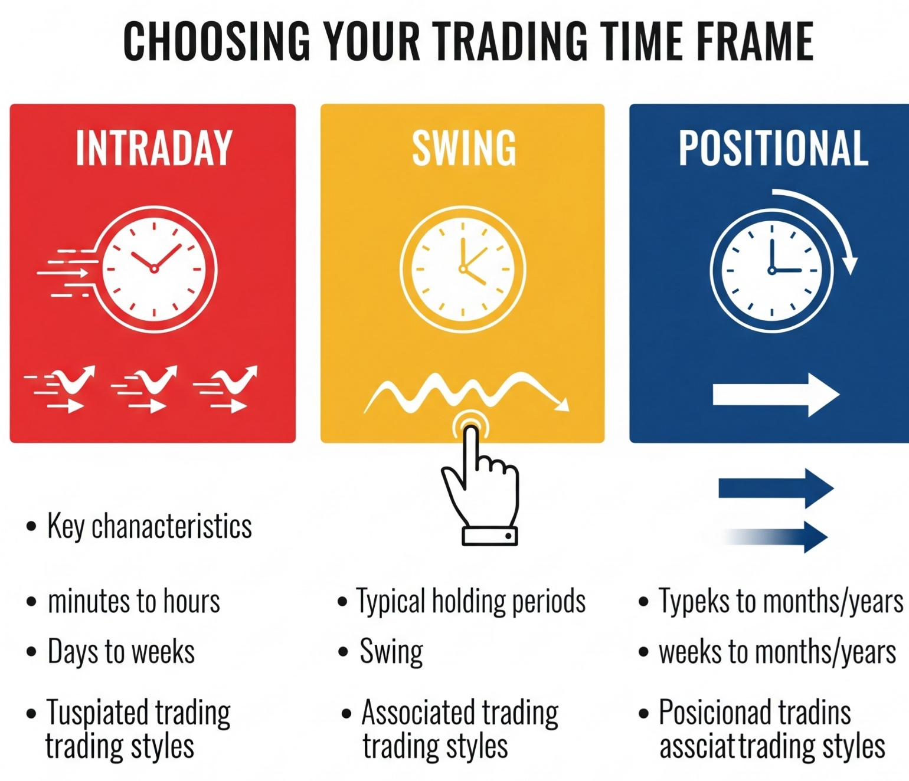
Intraday: For the Active Trader 🏃
Intraday trading is best for those who can dedicate several hours a day to monitoring the market. If you're a fast decision-maker and thrive under pressure, this short-term strategy might suit you. It requires quick analysis and discipline to stick to your plan, as you'll be making many trades throughout the day. It's often compared to being a sprinter in a race. ⏱️
- Example: Sarah is a full-time trader who enjoys the excitement of the market. She uses a 5-minute chart to identify quick price movements in a volatile stock. She sets strict stop-loss and take-profit orders and closes all her positions before the market closes, preventing any overnight risk.
Swing: For the Patient Analyst 🧘
Swing trading is ideal if you have a full-time job but can still check the market a few times a day. It's a less stressful approach than intraday trading, as you're not glued to your screen. This strategy is for those who are good at identifying patterns and trends over several days or weeks. It's more like being a long-distance runner who plans their pace carefully. 🗓️
- Example: John works as an engineer but is interested in trading. He checks his portfolio in the morning and evening, using a daily chart to spot stocks that are nearing a strong support level. He buys the stock, sets a stop-loss, and holds it for a week, aiming to profit from the short-term upward "swing" before it reverses.
Positional: For the Long-Term Investor 🎯
Positional trading is the most hands-off and is perfect for busy individuals who want to invest for the long term. This strategy is for patient individuals who believe in the fundamental value of a company and are unbothered by minor market fluctuations. It's like being a marathon runner who focuses on the finish line, not every single step. 💰
- Example: Maria is a business owner who wants to save for retirement. She researches companies with strong growth potential and buys their stocks, using a monthly chart to ensure the long-term trend is positive. She checks her portfolio only once a month and isn't worried about the daily news, knowing her investment is for the next 10-15 years.
-
Trend Analysis
Identifying uptrends, downtrends, and sideways markets
📈📉➡️ Recognizing the market’s direction is like checking the weather before going out — it helps you decide whether to carry an umbrella, wear sunglasses, or just enjoy a calm day.
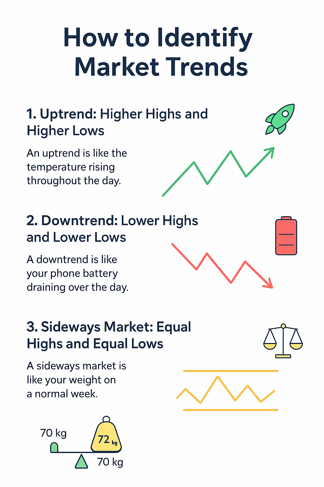
1. Uptrend: Higher Highs and Higher Lows 🚀
An **uptrend** is like the **temperature rising throughout the day**. It’s a period where prices are consistently moving up. You can spot an uptrend by looking for a pattern of **higher highs** (each peak is higher than the last) and **higher lows** (each dip is not as low as the previous one).
☀️ The temperature starts at 15°C, rises to 20°C, dips to 18°C, and then climbs even higher to 22°C. The pattern of progressively warmer peaks and dips shows a clear upward trend.
2. Downtrend: Lower Highs and Lower Lows ⬇️
A **downtrend** is the opposite, like your **phone battery draining over the day**. It’s a period where prices are consistently moving down. This trend is marked by **lower highs** (each bounce fails to reach the previous high) and **lower lows** (each drop falls below the previous low).
🔋 Your phone battery starts at 100%, drops to 80%, charges slightly to 85%, and then drops to a new low of 70%. The successive lower peaks and lower lows show a clear downward trend.
3. Sideways Market: Equal Highs and Equal Lows ⚖️
A **sideways market** is a period of balance, like your **weight on a normal week**. Prices are moving within a narrow, horizontal range without a clear direction. This is identified by **equal highs** (the price repeatedly hits a similar resistance level) and **equal lows** (the price repeatedly falls to a similar support level).
⚖️ Your weight fluctuates between 70 kg and 72 kg. It goes up to 72 kg, drops to 70 kg, rises again to 71.5 kg, and then falls back to 70.5 kg. The highs and lows are all around the same level, indicating a period of stability.
Trendlines & channels
Trendlines and channels are fundamental tools in technical analysis that help traders identify the direction and strength of a market. They make it easier to visualize price action and find potential entry and exit points.
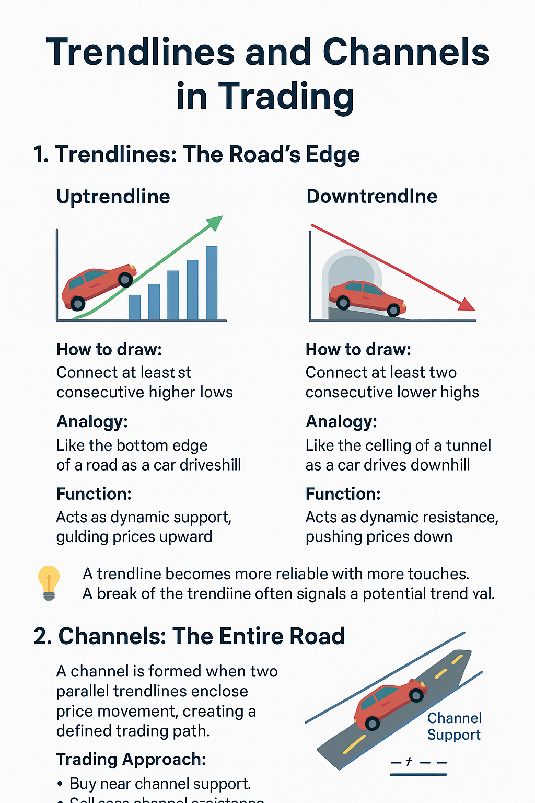
Trendlines: The Road's Edge 🚗
A trendline is a straight line drawn on a chart to connect a series of price peaks or troughs, acting as a visual guide for the overall trend.
-
An Uptrendline is like the bottom of a road as a car drives uphill 🚗. You draw it by connecting at least two consecutive higher lows. This line acts as a dynamic support level, guiding the price's path upward. A strong uptrend is confirmed when the price repeatedly touches this line and bounces off it without breaking below.
-
A Downtrendline is like the ceiling of a tunnel as a car drives downhill ⬇️. You draw it by connecting at least two consecutive lower highs. This line acts as a dynamic resistance level, pushing the price back down whenever it gets too close.
A trendline is considered more reliable the more times the price touches it. A break of the trendline can signal a potential change in the market's direction.
Channels: The Entire Road 🛣️
A channel is formed by two parallel trendlines that enclose the price action, creating a clear path for the market.
-
A channel support is the lower trendline, like the bottom line of the road.
-
A channel resistance is the upper trendline, like the top line of the road.
Traders often use channels to find opportunities, like buying when the price touches the support line and selling when it reaches the resistance line. A breakout above the resistance line or a breakdown below the support line is a strong signal that a new trend is forming.
Multi-timeframe trend confirmation
🗺️✅ Multi-timeframe analysis is a powerful technique that involves checking the overall direction on a long-term scale and then finding the perfect timing on a short-term scale. It's like planning a big trip.
The Logic Behind It
The strategy involves three simple steps to ensure your decisions align with the bigger picture:
-
The Big Picture (Overall Plan): Look at your long-term goal. Where are you going for your vacation? Is it a trip to Europe, a beach holiday, or a mountain trek? This is your main destination and overall plan.
-
The Short-Term View (Daily Details): Now, focus on the details of one day. What specific activity will you do on Tuesday? Will you visit a museum, go snorkeling, or hike a specific trail?
-
The Alignment (Confirmation): You confirm your plans by making sure the day's activity aligns with your overall goal. You wouldn't plan to visit the Eiffel Tower if your main vacation was a beach holiday in Thailand. A successful plan means the daily activity fits perfectly into the long-term destination.
Example: Confirming Your Vacation Plans 🌍
Imagine you are planning your summer vacation.
Step 1 (Overall Plan): You decide you're going to Europe for a month. The overall trend is "traveling in Europe." 🌍
Step 2 (Daily Details): You're in Italy and a local suggests a day trip to the Swiss Alps. You look at your map and see it's a long journey for a day. This is a potential short-term "pullback" or a decision point.
Step 3 (Confirmation): You check your main plan. Your goal is to explore Italy, not Switzerland. You confirm that this day trip doesn't align with your overall "Europe trip" plan and decide against it, staying true to your main goal. By staying aligned with your "long-term trend," you avoid a decision that would not fit the bigger picture. ✅
Support & Resistance
Concept & importance
What is 🚧 Support & 🛡️ Resistance? In financial trading, 🚧 support and 🛡️ resistance are fundamental concepts used to describe price levels on a chart where the forces of ⬆️ supply and ⬇️ demand meet and are expected to influence the direction of an asset's price.
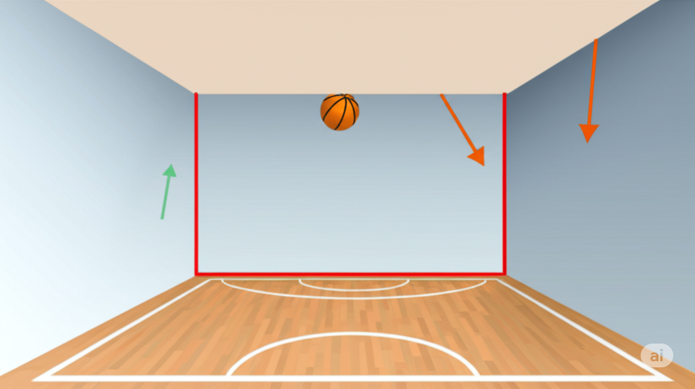
⬇️ Support is a price level where a downtrend is expected to pause due to a concentration of buying interest. It acts as a "floor" 🏢 that prevents the price from falling further, as buyers step in to purchase the asset, pushing the price back up 📈.
⬆️ Resistance is the opposite of support. It is a price level where an uptrend is expected to stall due to a surge in selling pressure. It acts as a "ceiling" 🏠 that stops the price from rising higher, as sellers enter the market, increasing the supply and causing the price to drop 📉.
It is important to note that these are not exact lines, but rather zones ☁️ or areas where price movements tend to reverse 🔄. The more a price level is "tested" (touched and bounced off) without breaking, the stronger that level is considered 💪. When a support or resistance level is eventually broken 💥, it often reverses its role. For example, a broken resistance level can become a new support level as the price retreats ↩️.
The Importance of Support & Resistance
Understanding these levels is crucial for traders because they provide a framework 🗺️ for making informed decisions 🤔.
- 🎯 Identifying Entry and Exit Points: Support and resistance levels help traders pinpoint potential buy (🟢) and sell (🔴) opportunities. A trader might buy when the price approaches a support level, anticipating a bounce 🤸, or sell when the price nears a resistance level, expecting a reversal 🔄.
- 🛡️ Risk Management: These levels are used to strategically place stop-loss (🛑) orders to limit potential losses 📉. For example, a trader might place a stop-loss order just below a support level, so if the price breaks through the "floor" 🏢, the trade is automatically closed (❌) before it incurs a significant loss.
- 🚦 Detecting Trend Changes: A strong move that breaks a significant support or resistance level can signal a shift in market sentiment 📈📉 and a potential change in the overall trend.
Daily Life Example
Imagine you're trying to bounce a 🏀 basketball in a room with a low ceiling.
- The floor 🏞️ is the support level. Every time the ball hits the floor, it bounces back up ⬆️. This is where the downward momentum stops due to a physical barrier. Similarly, in a market, a support level is where the price's downward momentum is halted by a surge of demand (🛒).
- The ceiling 🌄 is the resistance level. Every time you bounce the ball high enough to hit the ceiling, it is stopped and reverses direction, coming back down ⬇️. In trading, a resistance level is where the price's upward momentum is stopped by a surge of selling pressure (💸).
The more times the ball bounces off the floor or hits the ceiling without breaking through 💪, the more you trust that those levels will hold. However, if you get a taller person to throw the ball, and they break a ceiling tile 💥, that's like the price "breaking out" of resistance, signaling a new, stronger upward movement 🚀.
Here is a video that explains how to use support and resistance levels to read stock charts 📊.
Horizontal vs dynamic support/resistance
Both horizontal and dynamic support/resistance levels are powerful tools in technical analysis,
but they represent different ways of looking at market structure. While horizontal levels are static and defined by historical price points, dynamic levels are constantly moving and are tied to the current trend. A successful trader often uses both.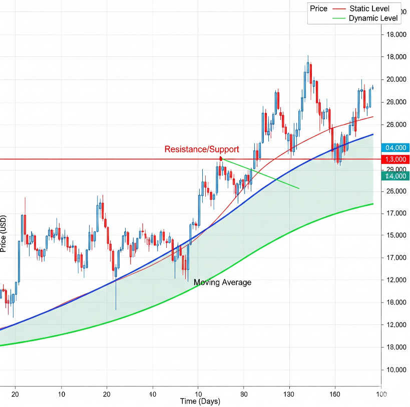
Horizontal Support & Resistance ↔️
Horizontal support and resistance levels are fixed price zones that do not change over time. They are represented by straight, horizontal lines on a chart and are based on previous price action.
- Concept: Think of horizontal levels as floors 🏢 (support) and ceilings 🏠 (resistance) in a building. The price repeatedly hits these levels and bounces off, confirming their importance. A previous high or a previous low can become a strong horizontal level.
- Best For: These levels are most effective in ranging or consolidating markets where the price moves sideways between a clear support and resistance zone.
- Analogy: A ball bouncing between a floor and a ceiling. 🏀 The floor and ceiling are fixed, just like horizontal support and resistance.
Dynamic Support & Resistance 📈
Dynamic support and resistance levels are flexible price zones that change and adapt to the current market trend. They are represented by moving lines or curves on a chart, rather than static horizontal lines.
- Concept: Dynamic levels follow the price, making them ideal for understanding momentum in a trending market. They are often formed by technical indicators that use averages of past prices.
- Best For: These levels are particularly useful in trending markets (uptrends or downtrends) because they help identify areas to enter a trade in the direction of the trend.
- Example: A **Moving Average (MA)** can act as a dynamic support, with the price often retracing to it before continuing its climb 🚀.
- Analogy: A car driving along a winding road. 🚗 The road itself acts as a dynamic support level—it moves and curves with the terrain, but the car stays on it as long as the trend (the drive) is strong.
Key Differences
Feature Horizontal Support & Resistance Dynamic Support & Resistance Nature Static (fixed price level) Dynamic (moves with the trend) Best Use Case Ranging or consolidating markets Trending markets Representation Straight horizontal lines Sloping trendlines or curves How to Use It To identify fixed targets, stop losses, and reversal points. To identify potential entry points on a pullback in a trend. How to trade breakouts and reversals
Two fundamental concepts that help traders anticipate these moves are breakouts and reversals. Understanding how to identify and trade them can significantly enhance your trading skills 💪.
Trading Breakouts: Riding the Wave 🌊
A breakout occurs when the price of an asset decisively moves beyond a defined level of support or resistance. This signifies a potential start of a new trend in the direction of the breakout.
- Concept: Imagine a dam holding back water 🏞️. When the pressure becomes too great, the dam breaks, and the water surges forward 💥. Similarly, in the market, after a period of consolidation where the price is confined by support and resistance, strong buying or selling pressure can cause a "break" beyond these levels.
- Why Trade Breakouts? Breakouts can offer opportunities to enter a trade early in a potentially strong and sustained move, allowing for significant profit potential 💰.
Identifying Breakouts:
- Identify Key Support and Resistance Levels
- Observe Price Action Near the Level
- Confirmation is Key 📈
Trading Breakouts:
- Entry: Enter a long position above broken resistance or short below broken support.
- Stop-Loss: Place stop-loss strategically to limit risk 🛡️.
- Profit Target: Estimate based on previous range.
Example in the Indian Market:
Consider Nifty 50 trading between 17,800 (resistance) and 17,500 (support). A break above 17,800 with volume could be a bullish breakout.
Trading Reversals: Catching the Turn 🔄
A reversal occurs when an established trend changes its direction. Identifying potential reversal points early can offer excellent risk-reward opportunities.
- Concept: Think of a car turning back 🚗. Trends eventually lose momentum, leading to a change in direction.
- Why Trade Reversals? Enter at the start of a new trend with defined risk.
Identifying Reversals:
- Look for Trend Exhaustion
- Identify Potential Turning Points
- Recognize Reversal Candlestick Patterns 📉📈
- Divergence 🐻
Trading Reversals:
- Entry: Enter long on bullish reversal at support, short on bearish reversal at resistance.
- Stop-Loss: Place stop-loss below/above reversal pattern.
- Profit Target: Next support/resistance or risk-reward ratio.
Example in the Indian Market:
A stock in an uptrend reaching resistance with decreasing volume and a bearish engulfing pattern could signal a reversal.
Combining Breakout and Reversal Strategies: 🤝
Savvy traders combine these. Failed breakouts can lead to strong reversals.
Important Considerations for Trading in India 🇮🇳:
- Volume: Always check volume for confirmation.
- Market Context: Consider overall and sector trends.
- News and Events: Be aware of news 🗞️.
- Risk Management: Use stop-loss 🛑.
- Practice: Use a demo account 🧑💻.
Candlestick Patterns
Single patterns: Doji, Hammer, Shooting Star, Marubozu
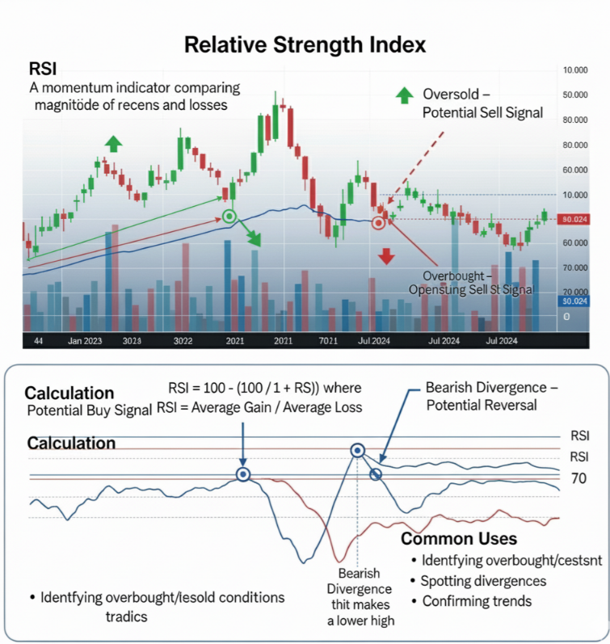
1. Doji ⚖️
A **Doji** is a candlestick pattern where a security's open and close prices are virtually equal. It looks like a cross, inverted cross, or plus sign. A Doji suggests market indecision and a balance between buyers and sellers. It's often a signal that a previous trend might be losing momentum.
Daily Life Usage Example
Imagine you're in a heated negotiation for a new car. The salesperson offers a price, and you counter with a lower one. After hours of back-and-forth, you both end up at the exact same price you started with. This stalemate is a Doji—a sign of great effort but ultimately no clear winner. It suggests the negotiation is at a critical turning point and could swing either way in the next discussion.
2. Hammer 🔨
The **Hammer** is a bullish reversal pattern that forms after a price decline. It has a long lower shadow (the tail) and a small body at the top, which indicates that sellers initially pushed the price down, but buyers stepped in to push it back up near the open. This pattern suggests that the selling pressure might be exhausted and a new upward trend could begin.
Daily Life Usage Example
Think of a basketball game. Your team is losing badly in the first half, and the score drops to a huge deficit. However, in the second half, your team makes a dramatic comeback, scoring point after point to end the game with a small loss, but with incredible momentum. The massive comeback represents the long lower shadow of the Hammer, showing that despite the initial fall, a strong new force (the buyers) is now in control, signaling a potential win in the next game.
3. Shooting Star 🌠
A **Shooting Star** is a bearish reversal pattern that forms after an uptrend. It has a small body at the bottom and a long upper shadow (the tail). This pattern shows that buyers initially pushed the price higher, but sellers took control and pushed the price back down near the open, indicating that the upward momentum may be ending.
Daily Life Usage Example
Picture a rocket launch. It soars high into the sky, representing a strong upward trend. Suddenly, just before reaching orbit, a malfunction forces it to abort its mission and return to the ground. The initial ascent is the long upper shadow, and the sharp reversal back down is the small body. This signals that the "upward trend" has failed and a reversal is in progress. The Shooting Star warns that the high point has likely been reached, and a downturn is on the horizon.
4. Marubozu 🚀
The **Marubozu** is a candlestick with no shadows (or very small ones). It appears as a solid rectangle. A Bullish Marubozu is a long green/white candlestick with no upper or lower shadows, indicating that buyers were in control from the very beginning to the very end of the trading period. A Bearish Marubozu is a long red/black candlestick with no shadows, showing that sellers dominated the entire period. This pattern signifies strong, uninterrupted momentum in one direction.
Daily Life Usage Example
Imagine you're on a road trip. A Bullish Marubozu is like a perfectly smooth, straight drive on the highway, with no stops, no detours, and no traffic jams. You started in one city and drove directly to your destination without any interruptions. A Bearish Marubozu is the opposite: a direct, non-stop, and uninterrupted journey in the wrong direction. The clean, straight line of the Marubozu shows a powerful commitment to a single direction without any hesitation or pushback.
Multi-candle patterns: Engulfing, Harami, Morning/Evening Star
Multi-candle patterns provide stronger trading signals than single candlestick patterns as they reflect a more significant shift in market sentiment over a period of two or three trading sessions.
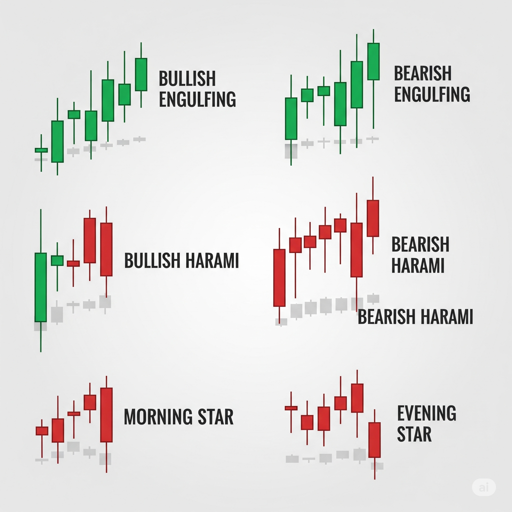
1. Engulfing Pattern 🤝
The Engulfing pattern is a two-candlestick reversal pattern.
- Bullish Engulfing: Appears in a downtrend. The first candle is bearish. The second candle is a large bullish candle that completely "engulfs" the body of the previous bearish candle. It indicates strong buying pressure that overcomes the previous selling momentum, suggesting a potential upward reversal.
- Bearish Engulfing: Appears in an uptrend. The first candle is bullish. The second candle is a large bearish candle that completely "engulfs" the body of the previous bullish candle. It indicates strong selling pressure that overwhelms the prior buying interest, suggesting a potential downward reversal.
Daily Life Usage Example
Imagine you're losing a tug-of-war match badly. Your team gets a small pull on the rope (the small bearish candle). Suddenly, a much stronger player joins your team and, with one massive heave, completely yanks the rope back in your direction and much further than the opponent's previous pull. That overwhelming comeback is a bullish engulfing—a complete reversal of momentum.
The opposite, a bearish engulfing, would be your team making a small gain, only to have the opposing team's new, dominant player completely overpower your position in one fell swoop, signifying the end of your forward progress.
2. Harami Pattern🤰
The Harami pattern is a two-candlestick reversal pattern indicating a potential pause or end to the current trend. "Harami" in Japanese means "pregnant," which aptly describes the pattern.
- Bullish Harami: Appears in a downtrend. The first candle is a large bearish candle. The second candle is a smaller bullish candle whose entire body is contained within the body of the previous bearish candle. It suggests that the strong selling momentum is waning, and buyers might be stepping in.
- Bearish Harami: Appears in an uptrend. The first candle is a large bullish candle. The second candle is a smaller bearish candle whose entire body is contained within the body of the previous bullish candle. It suggests that the strong buying momentum is weakening, and sellers might be gaining control.
Daily Life Usage Example
Think of a runner sprinting downhill. They're going at full speed for a long time (the large bearish candle). Suddenly, they come to a small, flat patch and take a few very small, short steps to catch their breath (the small candle contained within the first). That pause, or bullish Harami, suggests the intense downward momentum is over, and they might be preparing to start running uphill.
A bearish Harami is the opposite: a long, fast sprint uphill followed by a small, contained pause on a flat section, hinting that the upward climb is likely over.
3. Morning/Evening Star Pattern ✨🌙
The Morning Star and Evening Star are three-candlestick reversal patterns that are considered significant indicators of trend changes.
- Morning Star (Bullish Reversal): Appears in a downtrend. The first candle is a large bearish candle. The second candle is a small-bodied candle that gaps down from the first. The third candle is a strong bullish candle that closes well into the body of the first bearish candle.
- Evening Star (Bearish Reversal): Appears in an uptrend. The first candle is a large bullish candle. The second candle is a small-bodied candle that gaps up from the first. The third candle is a strong bearish candle that closes well into the body of the first bullish candle.
Daily Life Usage Example
Imagine you're on a long, depressing car journey at night (the first large bearish candle). You stop briefly at a quiet, small village with no clear sign of what to do next (the second, small candle of indecision). The next day, you set out on a new, much better road and drive a long distance in the opposite direction, putting a significant portion of the old journey behind you (the third, large bullish candle). That full sequence is a Morning Star—it shows a clear end to the bad trend and the beginning of a good one.
The Evening Star is the opposite. You're on a great road trip during the day, full of good vibes. You stop briefly at a quiet village at night, feeling a little lost. The next morning, you realize you're on the wrong road, and a long, difficult drive in the wrong direction begins, erasing most of your previous progress.
Using patterns with confirmation signals
Candlestick patterns are most effective when they are confirmed by other signals, rather than being used in isolation
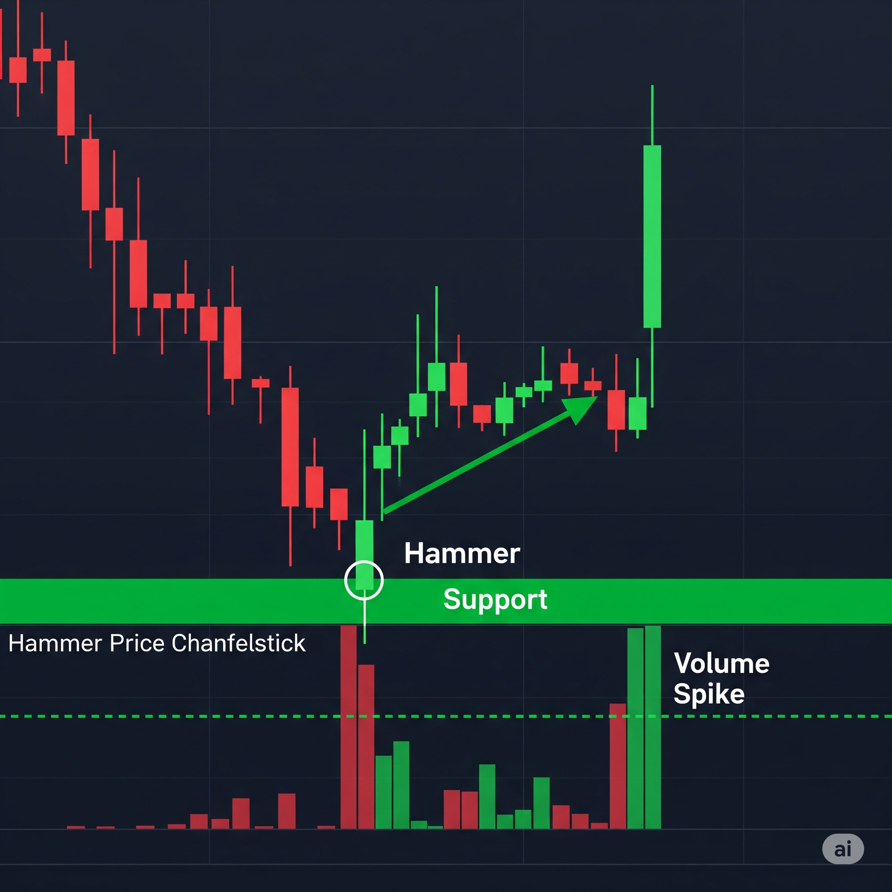
The most common confirmation signals are:
- Volume 📊: A significant increase in trading volume accompanying a reversal pattern indicates that a large number of market participants are supporting the new trend.
- Support and Resistance 📈📉: A reversal pattern that forms at a strong support or resistance level or a key trendline is a much more reliable signal.
- Technical Indicators ⚙️: A reversal pattern confirmed by a technical indicator like the Relative Strength Index (RSI) or Stochastic Oscillator can provide a powerful signal. For example, a bullish Hammer pattern at a support level is more convincing if the RSI is also showing an oversold condition.
- Next Candle Confirmation➡️: The candle that follows the pattern itself provides the most immediate confirmation. For a bullish reversal, the next candle should be bullish and trade above the high of the pattern's last candle. For a bearish reversal, the next candle should be bearish and trade below the low of the pattern's last candle.
Example: Confirming a Hammer Pattern 🔨
Let's look at an example using a Hammer pattern, which signals a potential bullish reversal after a downtrend.
Pattern
A stock's price has been in a clear downtrend. A Hammer candlestick forms, with a small body at the top and a long lower shadow. This alone suggests that sellers tried to push the price down, but buyers stepped in to reverse the move.
Confirmation Signals
Volume: We check the volume on the day the Hammer formed and see it was significantly higher than the average volume of the previous days. This tells us that the buying pressure that caused the reversal was strong.
Support Level: The Hammer formed exactly at a key historical support level where the price had bounced multiple times before.
Next Candle: The day after the Hammer, the next candle is a strong, large green candle that closes well above the Hammer's high. This provides immediate confirmation of the bullish reversal.
Technical Indicator: The RSI for the stock had dropped below 30, signaling an oversold condition, just as the Hammer was forming. This adds another layer of confirmation.With these four confirmation signals, the probability of a successful bullish reversal is much higher than relying on the Hammer pattern alone. The combination of signals paints a more complete picture of a genuine shift in market sentiment.
Live Chart Practice
A. Reading a Chart: Like Checking 🗺️ Google Maps Before a Road Trip 🚗
Imagine you need to drive from one end of the city to the other. You wouldn't just start driving; you'd check 🗺️ Google Maps first. A market chart is just like your map.
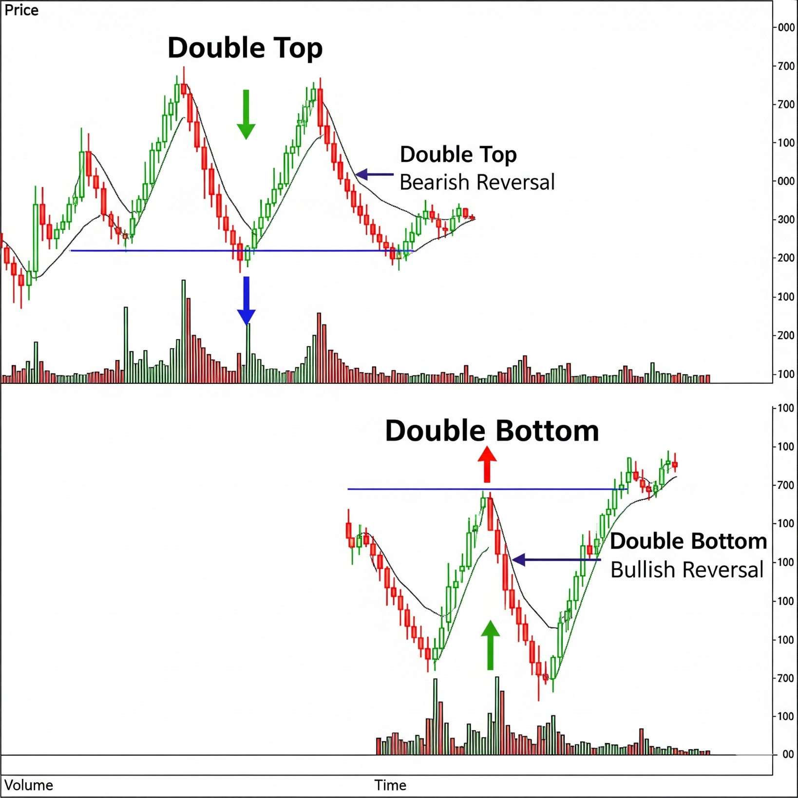
-
Price Action (The Car's Movement 🚦): Looking at 📊 candlesticks is like watching the live traffic flow.
- A long green candle 🌱 is a clear, open road. Traffic is moving fast (Buyers are in control).
- A long red candle 🛑 is a major traffic jam. Everything has stopped (Sellers are in control).
- Small, mixed candles 🚥 are like stop-and-go traffic. You move a little, then stop. There's uncertainty about which way the traffic will ultimately flow.
-
Trends (The Rush Hour ⏰): This is the overall traffic pattern for the day.
- Uptrend: It's 🌃 3 AM. The roads are empty, and you can get to your destination quickly. This is a good time to "drive" (trade with the trend) ⬆️.
- Downtrend: It's 🌆 6 PM on a Friday. It's peak rush hour, and progress is slow and frustrating. You know to expect delays and downward movement ⬇️.
-
Support and Resistance (Bargain Prices 🏷️ vs. MRP 💰):
- Support (The Discount Price 📉): Think of the lowest price you've ever seen for your favorite brand of shoes 👟. When the price drops to that "bargain" level, lots of people start buying. In the market, this is a support level—a price floor where buyers tend to rush in 🛡️.
- Resistance (The MRP/Maximum Retail Price 📈): Now think of the highest price for those same shoes 👟, above which you'd feel it's a rip-off. Most people stop buying at this point. In the market, this is a resistance level—a price ceiling where sellers tend to take over 🛑.
- Volume (The Crowd 🧑🤝🧑): This is simply how many people are in the market. If the shoe price drops to its bargain level and the store is suddenly packed with people (high volume भीड़ 📢), you know it's a significant event. If the price drops but the store is empty (low volume शांति 🤫), it might not be a real trend.
B. Practicing with Zerodha/TradingView: Using a Driving Simulator 🎮
Before you drive a real Formula 1 car 🏎️, you use a simulator 🕹️. TradingView's Paper Trading is your financial driving simulator.
You get to "drive" on real roads (live market data 📈) with real traffic conditions (price movements). You can practice accelerating (buying ⬆️), braking (selling ⬇️), and navigating sharp turns (volatility 🌪️). If you "crash" (make a losing trade 💥), you just hit reset 🔄. There's no real financial damage 💸➡️🤕. It's the perfect way to build muscle memory 💪 and confidence 😎 before you use real money ₹.
C. Step-by-Step Trade Setup: Following a Recipe 📜 to Cook a Meal 🍳
You don't just throw random ingredients in a pot and hope for the best. You follow a recipe 📜. A trade setup is your financial recipe.
Let's say your "recipe" is to bake a cake 🎂 (make a profitable trade 💰).
- Step 1: Read the Recipe (Market Analysis 🧐): You first read the entire recipe to understand the goal. Is it a quick cupcake 🧁 (short-term trade) or a complex multi-layer cake 🍰 (long-term investment 🏦)? You check if you have all the necessary ingredients (market conditions are right ✅).
- Step 2: Preheat the Oven (Wait for Confirmation 🔥): The recipe says, "Preheat oven to 180°C." You don't put the cake in a cold oven. Similarly, you wait for a confirmation signal (like a bullish candle 🌱 at support 🛡️) before you "enter" the trade 🚀.
-
Step 3: Set Your Timers (Define Your Exits ⏰): This is the most crucial part of risk management 🛡️.
- Stop Loss (The Smoke Alarm 🚨): You have a smoke alarm in your kitchen 🏠. If you forget the cake and it starts to burn 🔥, the alarm goes off, and you immediately take it out to prevent a fire 🚒. A stop loss is your financial smoke alarm 🚨. It automatically gets you out of a bad trade to prevent a small loss 🤕 from turning into a disaster 🤯.
- Take Profit (The Kitchen Timer ⏳): The recipe says, "Bake for 30 minutes." You set a timer ⏳. When it dings 🔔, you take the perfectly baked cake 🎂 out. You don't leave it in for another 10 minutes hoping it will magically get better—it will just burn 🔥. A take profit order automatically sells your position when it hits your target 🎯, locking in your success 🎉.
- Step 4: Taste and Adjust (Review the Outcome 🤔): After the meal 🍽️, you think about it. Was it good 👍? Maybe next time, you'll add a little less sugar (use a tighter stop loss 🤏) or bake it for five fewer minutes (set a closer profit target 🤏). Reviewing every trade, win or lose (👍 or 👎), is how you refine your "recipe" 📜 and become a better trader 👨🍳👩🍳.